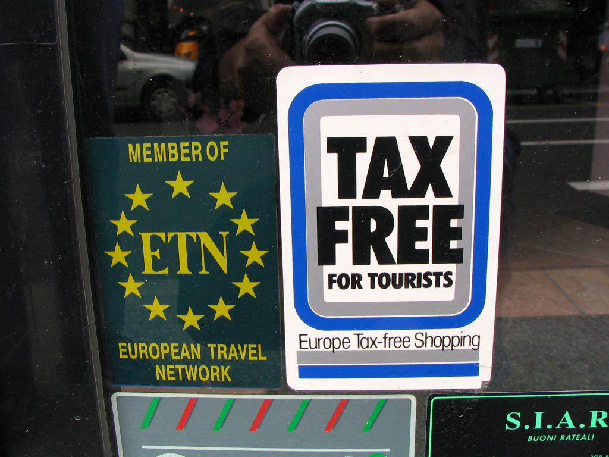

Tax free sign
The nice part of shopping in Italy is that the tax (called IVA or VAT) is already included in the price (which spares you the nice surprise of paying a higher price when you get to the cash register). The IVA can be up to 24% of the retail price. If you are a visitor to Italy and you are not a resident of any EU country, you can get a refund for merchandise (only goods, no services) that cost more than € 154,94, as long as they are purchased on the same day at the same store. Just look for the stores with the blue and white "Tax Free" sign on the door and remember to have your passport (passaporto) with you at the time of your purchase. Once at the cash register ask for a "Tax Free Shopping Cheque" along with the receipt (scontrino). The "Tax Free Shopping Cheque" is a document that the seller must fill out with the description of the purchased item/s, the buyer’s personal data along with the passport (or other valid ID) specifications. At the time of departure from Italy (or the last E.U. country), you need to show the receipt, the “Tax Free Shopping Cheque” and the unused merchandise to the Customs Office at the airport. It is very important to get to the airport early enough (I would recommend to add at least 1 extra hour to your normal schedule) to go through the sometimes extremely long customs process. Remember that you must go to Customs before the check-in if you intend to transport the merchandise into the checked-in luggage. Customs must see the items you have purchased in order to allow the refund. After examining that the merchandise matches the information on the receipt and invoice, the officer will stamp the “Tax Free Shopping Cheque” with which you can go to any Tax-Free Cash Refund booth at the airport to obtain your immediate refund (rimborso). Sometimes the merchant uses refund services such as Premier Tax Free or Global Blue, and their offices can be found in the major airports (it could be either before or after security). They may also charge a commission. Keep also in mind that the stamp can be obtained only within the end of the third month after the month of purchase (for example, if you purchase something in July, you have time until the end of October to get the stamp). If you have purchased an item in a store that doesn't participate in the "Tax Free" program, well… things get more complicated. You need to ask for the fattura (invoice). Make sure that the fattura includes the phrase Esente IVA ai sensi della legge 38 (I’ll spare you the English translation, for this is just a legal sentence) and shows the amount of IVA. Once at the airport, bring this invoice along with your merchandise to a Customs Office to have it stamped. At this point you need to mail the fattura back to the store within 3 months from the date of the purchase. The store will then send you a check (that could cost a lot of money to cash if made in foreign currency) or will credit your credit card account. Keep in mind that this process may take months and also that you may not receive a response from the vendor. A good alternative is to ask the store to ship the merchandise directly to your home address. In this case no tax is charged at the time of the purchase. However, sometimes the shipping costs exceed the value of the refund. {This is an excerpt from chapter 5 “Stores” of the eBook “Italy from the Inside. A native Italian reveals the secrets of traveling in Italy”. Buy our eBook on Amazon and leave us a review! If it’s good, you’ll make us happy, if it’s bad, you’ll make us improve. Thank you either way!}